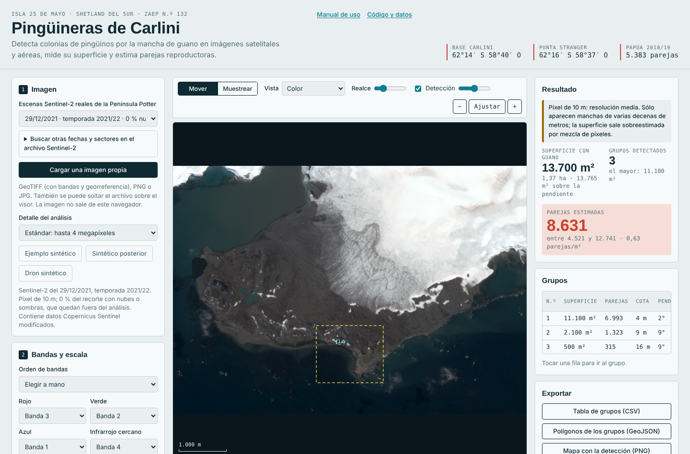

Volver a la herramienta · Descargar en Word
Isla 25 de Mayo · Shetland del Sur · ZAEP N.º 132
Manual de Pingüineras de Carlini
Cómo cargar una imagen, detectar el guano, estimar parejas y seguir una colonia por temporadas.
1. Qué es y qué no es
Pingüineras de Carlini es una herramienta web para encontrar colonias de pingüinos en imágenes satelitales y aéreas, medirlas y seguirlas en el tiempo. Trabaja sobre la mancha de guano, no sobre las aves: a la resolución de un satélite un pingüino no llega a ocupar un píxel.
No es un censo. Da superficies con firma de guano y una estimación de parejas que depende de una densidad supuesta. Todo resultado necesita revisión visual y, cuando existe, contraste con el censo de terreno.
Dirección: https://surtecto.github.io/pinguineras-carlini/ · Funciona en cualquier navegador actual, en computadora o teléfono. Las imágenes se procesan en el propio navegador: nada se sube a un servidor.
2. Recorrido rápido

- Al abrir se carga la escena Sentinel-2 del 29 de diciembre de 2021 sobre la Península Potter, con el relieve y la zona de Punta Stranger marcada con línea de trazos.
- El visor muestra en celeste lo detectado. A la derecha aparecen la superficie, los grupos y las parejas estimadas.
- Elegir otra fecha en «Escenas Sentinel-2 reales» para ver cómo cambia.
- Mover los umbrales del paso 4 y observar el efecto en el visor.
- Bajar hasta «Seguimiento por temporadas» para comparar con los censos publicados.
3. Paso 1: la imagen
Escenas incluidas
Trece recortes Sentinel-2 reales de la península, de 2019 a 2025, con píxel de 10 m. El menú indica fecha, temporada y porcentaje de nubes. Las nubes y sus sombras quedan fuera del análisis.
Buscar en el archivo Sentinel-2
Abrir «Buscar otras fechas y sectores», elegir sector y temporada y pulsar «Buscar escenas». La herramienta consulta el archivo abierto de Copernicus, mide las nubes sobre el sector en cada escena y lista hasta doce fechas, de la más despejada a la más nublada. Al tocar una, baja sólo el recorte del sector. Hay seis sectores: Península Potter, Península Barton, Isla Ardley y Fildes, Bahía Almirantazgo, Lions Rump y Punta Armonía. El archivo cubre desde 2018/19.
Imagen propia
- GeoTIFF: conserva bandas, coordenadas y tamaño de píxel. Admite WGS 84, UTM y la estereográfica polar antártica EPSG:3031.
- PNG o JPG: sirven capturas de Google Earth u ortofotos. No traen escala: hay que indicarla en el paso 2.
- Se puede soltar el archivo sobre el visor.
- «Detalle del análisis» fija el tamaño máximo. Las imágenes mayores se reducen; el aviso bajo los botones dice cuánto.
Ejemplos sintéticos
Tres escenas inventadas para practicar: una satelital, la misma cinco temporadas después y una de dron. Traen la respuesta correcta, así que la app informa cuánto acertó. No son imágenes de Carlini.
4. Paso 2: bandas y escala
- «Orden de bandas» indica qué banda del archivo es roja, verde, azul e infrarroja. Hay órdenes prefijados para PlanetScope, Sentinel-2, WorldView y Landsat.
- Con infrarrojo cercano se descartan vegetación y agua; con infrarrojo medio, nieve.
- «Tamaño de píxel» se lee solo del GeoTIFF. En una captura, escribirlo o usar «Medir»: marcar dos puntos de distancia conocida, por ejemplo la barra de escala, y anotar los metros.
- Sin escala las superficies quedan en píxeles y no hay estimación de parejas.
5. Paso 3: relieve
Las escenas Sentinel-2 reciben solo el relieve Copernicus de 30 m. Para una imagen propia georreferenciada, «Cargar modelo de elevación» acepta un GeoTIFF de Copernicus DEM o REMA. Con relieve:
- El menú «Vista» suma elevación, pendiente y sombreado.
- Cada grupo recibe cota, pendiente media, orientación y superficie medida sobre la ladera.
- «Descartar lo que esté fuera de estos límites» elimina detecciones en pendientes o cotas donde no se anida.
Un relieve de 30 m sobre una imagen de 10 m o menos da pendientes suavizadas: sirve para descartar laderas, no para medir microrrelieve.
6. Paso 4: detección del guano
Regla espectral
- Enrojecimiento: cuánto supera el rojo al azul.
- Tinte rosado: cuánto se hunde el verde respecto del promedio de rojo y azul. Es la huella del krill.
- Brillo mínimo y máximo: descartan sombras, agua y nieve.
- NDVI, NDWI y NDSI máximos: descartan vegetación, agua y nieve cuando hay infrarrojo.
«Umbrales relativos a cada escena» mide los dos índices en desvíos respecto del suelo típico de esa imagen. Conviene dejarlo activado al comparar fechas: los valores fijos que sirven en una escena fallan en otra con distinto sol o procesamiento. Debajo se lee a qué valores absolutos equivale.
Con muestras
Elegir una clase y tocar la imagen donde se la reconoce. Con dos o tres toques de guano y algunos de roca, nieve, agua, vegetación u otro confusor, el clasificador separa las clases. «Tolerancia del guano» regula cuánto se aleja un píxel del guano marcado y sigue contando. Es el método más confiable cuando la regla confunde.
Zona de interés y limpieza
- «Analizar sólo el entorno de Punta Stranger» limita la detección al recuadro de trazos. Al desactivarlo aparecen los falsos positivos del resto de la península, entre ellos los techos de la base.
- «Quitar puntos sueltos» y «Cerrar huecos» limpian la máscara.
- «Superficie mínima de un grupo» descarta manchas menores.
7. Paso 5: de superficie a parejas
Parejas = superficie × densidad de nidos. El valor inicial, 0,63 ± 0,3 parejas por metro cuadrado, proviene de colonias de Adelia de Mawson. No hay un valor general publicado para el papúa.
Para calibrar, escribir las parejas contadas en terreno y pulsar «Calibrar»: la app divide por la superficie detectada y usa ese cociente. La densidad calibrada vale para esa imagen y esa fecha.
8. Paso 6: individuos
Se habilita con píxeles de hasta 15 cm, es decir, dron o foto aérea. Busca manchas oscuras compactas del tamaño de un ave. Cuenta aves presentes, no nidos, y puede tomar piedras o sombras por aves. «Sólo sobre el guano detectado» reduce esos errores.
9. El visor
- Mover: arrastrar. Acercar: rueda del ratón, pellizco o los botones − y +. «Ajustar» vuelve a la vista completa.
- Con el teclado: flechas para desplazar, + y − para acercar, 0 para ajustar.
- «Vista» cambia entre color, falso color infrarrojo, enrojecimiento, tinte rosado, NDVI, elevación, pendiente y sombreado.
- «Realce» aclara u oscurece. «Detección» muestra u oculta la máscara y regula su transparencia.
- Bajo el visor se leen las coordenadas y los valores del píxel bajo el cursor.
- Tocar un grupo lo resalta en amarillo y en la tabla; tocar una fila lleva al grupo.
10. Resultados y exportación
| Columna | Significado |
|---|---|
| Superficie | Área del grupo en planta |
| Parejas | Superficie por la densidad central |
| Cota y Pend. | Altura y pendiente medias del grupo |
| Mira al | Hacia dónde baja la ladera. En el sur, las caras al norte reciben más sol |
| Al mar | Distancia del borde del grupo al agua más cercana |
| Vecino | Distancia al centro del grupo más próximo |
| Centro | Latitud y longitud, o píxel si la imagen no está georreferenciada |
La franja de color sobre los números indica para qué sirve la resolución de la imagen. Exportaciones: tabla de grupos en CSV, polígonos en GeoJSON (se abren en QGIS), posiciones de individuos en CSV y mapa en PNG.
11. Seguimiento por temporadas

- El mapa muestra las 70 colonias con conteos publicados. El tamaño del círculo crece con el último conteo; el color indica la especie más numerosa. Tocar una colonia muestra su ficha y su serie.
- El gráfico dibuja los conteos por temporada: nidos unidos por línea, pichones y adultos como marcas huecas, y las detecciones propias como rombos con su rango.
- El calendario indica la fase del ciclo de cada especie y la intensidad esperada de la señal de guano. Es aproximado: con nieve tardía la señal se corre a fines de diciembre.
- «Agregar a la serie» guarda la detección actual con su fecha en la colonia elegida. La temporada va de julio a junio.
- «Qué cambió entre dos fechas» calcula qué superficie se mantiene, aparece y desaparece, y avisa si las imágenes son de fases distintas o de píxeles muy diferentes.
- La serie se recuerda en el navegador. Para conservarla o llevarla a otra computadora, exportarla en JSON e importarla después.
El sitio trae una serie inicial con las 13 escenas Sentinel-2. Once figuran como «zona bajo nieve, nubes o sombra»: ese vacío es un resultado, no un error.
12. Cómo leer un resultado
- Qué se confunde con guano: techos y edificios rojizos, barro de revolcaderos de elefantes marinos, líquenes anaranjados, roca oxidada, nieve con algas rojas.
- La mejor ventana es de fines de diciembre a enero. Antes puede haber nieve sobre la colonia; después la mancha se lava.
- Comparar entre años sólo imágenes de la misma fase y del mismo sensor.
- Con píxeles de 10 m la superficie sale sobreestimada y los grupos chicos no aparecen.
- Una colonia abandonada sigue manchando el suelo: la imagen no distingue por sí sola pasado de presente.
13. Problemas frecuentes
| Qué pasa | Qué hacer |
|---|---|
| No detecta nada | Bajar los desvíos de enrojecimiento y tinte, o pasar al método con muestras |
| Detecta media península | Activar los umbrales relativos; subir los desvíos; limitar a la zona de interés |
| «Sin escala» | Escribir el tamaño de píxel o medir una distancia conocida |
| La búsqueda en el archivo falla | Algunas redes bloquean esos servidores. Probar con otra conexión |
| «Esa escena no cubre el sector completo» | El sector cae en el borde de una tesela. Elegir otra fecha |
| El relieve no se carga | La imagen tiene que ser un GeoTIFF georreferenciado y superponerse con el relieve |
| El conteo de individuos está deshabilitado | El píxel supera los 15 cm. Hace falta una imagen de dron |
14. Glosario
| Término | Significado |
|---|---|
| Grupo reproductivo | Conjunto contiguo de nidos; una colonia tiene muchos |
| Temporada | Ciclo reproductivo, de julio a junio: 2021/22 empieza en 2021 |
| NDVI, NDWI, NDSI | Índices de vegetación, agua y nieve |
| SCL | Clasificación de escena de Sentinel-2: nubes, sombras, nieve, agua |
| Desvío | Unidad de dispersión robusta del suelo típico de una escena |
| MAPPPD | Base abierta de censos de pingüinos antárticos |
| ZAEP | Zona Antártica Especialmente Protegida |
15. Datos y créditos
- Sentinel-2 L2A: contiene datos Copernicus Sentinel modificados (2019–2025), leídos de Earth Search (Element 84) en AWS.
- Relieve: Copernicus DEM GLO-30, © DLR e.V. 2010–2014 y © Airbus Defence and Space GmbH 2014–2018, bajo licencia COPERNICUS de la Unión Europea y la ESA.
- Censos: MAPPPD, Antarctic Penguin Biogeography Project, CC BY 4.0.
- Costa: Natural Earth, dominio público.
- Código y datos: https://github.com/surtecto/pinguineras-carlini